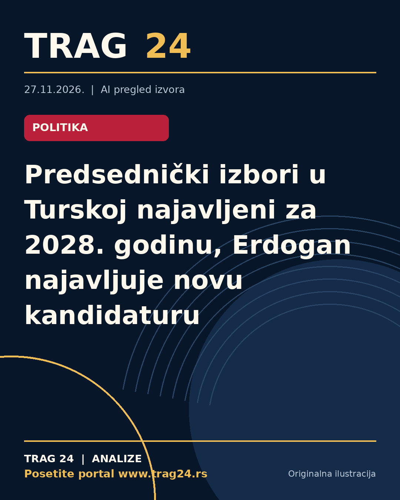

Predsednički izbori u Turskoj najavljeni za 2028. godinu, Erdogan najavljuje novu kandidaturu

ŠTA SE DOGODILO
Potpredsednik turske vlade Dževdet Jilmaz izjavio je da će predsednički izbori u Turskoj biti održani 2028. godine, uz mogućnost da budu pomereni nešto ranije nego što je prvobitno planirano. Istovremeno, u vladajućoj koaliciji postoji konsenzus da aktuelni predsednik Tajip Redžep Erdogan ponovo kandiduje za ovu funkciju.
HRONOLOGIJA
Informacija o izborima u Turskoj i Erdoganovoj kandidaturi dolazi iz današnjih izjava Dževdeta Jilmaza, koje su preneli mediji kao što su Danas i N1 preko britanske agencije Rojters. Izborni proces trebalo bi da se održi 2028. godine, dok se razmatra mogućnost da budu održani mesec ili dva dana ranije od planiranog termina u maju.
ŠTA NAVODE IZVORI
Zalihe dostupnih izvora navode da je potpredsednik vlade Jilmaz istakao kako vladajuća koalicija u Turskoj ima dogovor o Erdoganovoj ponovnoj kandidaturi i da se raspravlja o manjem pomeranju termina izbora. Medijski izveštaji dosledno naglašavaju očekivanje održavanja izbora 2028. godine, bez navođenja tačnog datuma.
ŠTA JE POTVRĐENO
Potvrđeno je da predsednički izbori u Turskoj planirani za 2028. godinu mogu biti održani ranije, a da postoje usaglašena očekivanja da se aktuelni predsednik Tajip Redžep Erdogan ponovo kandiduje. Do sada nije objavljen službeni datum izbora, već samo okvirni vremenski period i razmatrana opcija pomeranja.
ŠTA NIJE POTVRĐENO
Nije potvrđeno tačno kada će izbori biti održani, osim da mogu biti pomereni mesec ili dva ranije od planiranog termina u maju 2028. godine. Takođe, nije potvrđeno ko će biti ostali kandidati na izborima ni kakav će biti izborni proces u detaljima.
ŠTA OSTАJE OTVORENO: Ostaje neizvesno da li će izbori zaista biti pomereni u odnosu na prvobitni termin, kao i pod kojim uslovima će Erdogan zvanično kandidovati svoju novu predsedničku funkciju. Detalji o drugim potencijalnim kandidatima i političkim okolnostima ostaju predmet daljih najava i analiza.
Izvori
- https://www.danas.rs/svet/predsednicki-izbori-u-turskoj-bice-2028-godine-erdogan-se-ponovo-kandiduje/
- https://n1info.rs/svet/predsednicki-izbori-u-turskoj-bice-2028-godine/
- https://www.juznevesti.com/politika/raspisani-predsednicki-izbori-u-srbiji-za-27-decembar/
Ova analiza je pripremljena uz pomoć veštačke inteligencije na osnovu javno dostupnih izvora. Navodi izvora nisu nužno nezavisno potvrđeni.